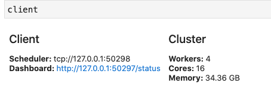

Importing ARCOS Data with Dask¶
Today, we’re gonna do some of the manipulations you were doing over the last several weeks for your Opioid project, but now in dask!
For familiarity, and so you can see what advantages dask can bring to your workflow, today we’ll be working with the DEA ARCOS drug shipment database published by the Washington Post! However, to strike a balance between size and speed, we’ll be working with a slightly thinned version that has only the last two years of data, instead of all six.
Start your own cluster!¶
dask has many backends, but the one that’s most versitile (and often most performant) is the distributed backend, so let’s use that here. Run:
from dask.distributed import Client
client = Client()
client
to create a set of workers on your computer. This cluster is running only on your own computer, but it operates exactly the way it would work on a cloud cluster where these workers live on other computers.
When you type client in a jupyter notebook, you should see the clusters status pop up like this:

This status tells me that I have four processes running on my computer, each of which running 4 threads (for 16 cores total). In addition, it tells me that the cluster sees that I have about 34GB of memory for it to play with.
One cool thing you’ll see is that this panel includes a link to a Dashboard. Click this link, and a new tab will open in your browser that shows you, in real time, what your dask cluster is doing! We’ll come back to this later.
Note: these workers communication via networking protocols, so your firewall / anti-virus may ask if it’s ok to let Python accept connections (it is!). If you can’t get your system running, it may be due to your firewall / anti-virus. In that case, try client = Client(processes=False). This will create four workers hiding in the same process (obviating the need for network protocols for communication between processes). Don’t worry if that last bit doesn’t make sense – those are
implementation details you don’t ahve to worry about! :)
Let’s load some data!¶
(1) Download the thinned ARCOS data from this link. It should be about 2GB zipped, 25 GB unzipped.
(2) Our goal today is going to be to find the pharmaceutical company that has shipped the most pills (DOSAGE_UNIT) in the US.
When working with large datasets, it is good practice to begin by prototyping your code with a subset of your data. So begin by using pandas to read in the first 100,000 lines of the ARCOS data and write pandas code to compute the shipments from each shipper (the group that reported the shipment).
(3) Now let’s turn to dask. Re-write your code for dask, and calculate the total shipments by reporting company. Remember:
Start by spinning up a cluster
Dask won’t read compressed files, so you have to unzip your ARCOS data.
Start your cluster in a cell all by itself since you don’t want to keep re-running the “start a cluster” code.
Don’t load columns you don’t need!
If you need to review dask basic code, check here.
As you run your code, make sure to click on the Dashboard link below where you created your cluster:

Among other things, the bar across the bottom should give you a sense of how long your task will take:

(For context, my core (which has 8 physical cores that present as 16 with hyperthreading) took about 30 seconds. My computer is fast, but most computers should be done within a couple minutes).
Remember when you’re working with dask, nothing actually runs until you either run .compute(), or use a method that triggers immediate execution (like .head(), or a save function).
(4) Now let’s calculate, for each state, what company shipped the most pills?
Note you will quickly find that you can’t sort in dask – sorting in parallel is really tricky! So you’ll have to work around that. Do what you need to do on the big dataset first, then run .compute() so you get the data returned as a regular pandas dataframe, then finish.
Does this seem like a situation where a single company is responsible for the opioid epidemic?
(5) Now go ahead and try and re-do the chunking you did by hand for your project – calculate, for each year, the total morphine equivalents sent to each county in the US.